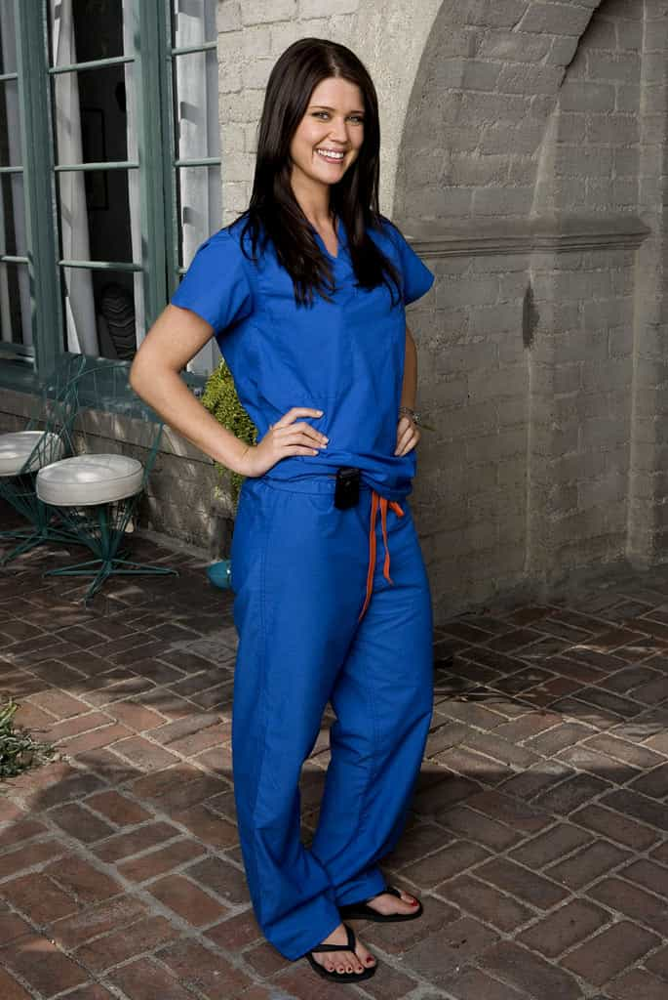

Quintus can be found at qcurtius.com. He is the author of the books On Duties, Thirty Seven, Sallust: The Conspiracy Of Catiline And The War Of Jugurtha, and other books. His work has been reviewed at Taki's Magazine. He can be followed on Twitter


A girl’s profession or job can say a lot about her. When you are casting about for dating prospects, we men need to be just as ruthless and mercenary as girls are. In this scary modern era of women getting high salaries for occupying useless paper-pushing jobs where they can torment people, it is refreshing to learn that there are occupations that can actually help us as men. Remember: the only person who cares about you is you. From my experience, girls who are nurses offer significant advantages for short or long term relationships. Let me count out five reasons…
The health care and nursing professions are in significant demand these days and this demand is expected to grow in the years ahead. Even nurses who are just out of school can command significant incomes, and this is a good thing for men. Why? Because it’s better to be with a girl who has money than with one who is broke. She can buy you things. Never turn down money or gifts from a girl. She can go dutch with you frequently when you go out, and generally feel better about her sense of security and well-being. Trust me on this: being around broke chicks is no fun. Nobody wants to be around a flatliner.

Nurses are comfortable with human anatomy. Nurses have seen it all. They are around naked bodies all day and are fascinated by them. A healthy interest in human anatomy is a precondition for good sexual performance. This translates into better sex for you. She’ll know just how to stroke your prostate in that special way. She’ll also tell you exactly which part of her genitalia is most receptive to stimulation. You won’t get any squeamishness, whining, or half-stepping when you ask her to do new and unusual sex acts with you in bed.
How is this an advantage for you? By working a real schedule, nurses have little energy to spend in destructive female pursuits like gossiping, scheming, or conniving. Idleness is the root of much evil when it comes to girls. They will want to be intimate and relaxed in their off-time, not spend it causing trouble, or trying to keep up with the Joneses. Another benefit of her working long hours is that you can get some time to yourself. It is clear to any guy who has been in short term or long term relationships that each person needs time to himself or herself. Too much contact can lower attraction, and it is a good thing to have time for yourself. Your woman should never be the master of your time.
It takes some mental ability to pass all those nursing courses and the examinations necessary to become a nurse. I don’t know about you, but I can’t stomach a girl who is an idiot. I just can’t. And there are many of them out there. If a girl is already a nurse, you know that she at least has some level of mental acuity. She’s also displayed a certain level of discipline and dedication in tolerating the long hours, the arrogance of doctors, and the touch of hazing that goes with the medical profession. This translates into a specimen of womanhood who is not spoiled.
Getting free stuff is always great. Never turn down free things from the girl you’re dating. Fall off your bike? Jam your finger in that pickup game with your friends? Don’t know how to treat those flu symptoms? Just ask her. She’ll tell you. Being around doctors, patients, and other nurses has exposed her to a huge range of diseases, afflictions, ailments, and accidents. In these days of pricey health care and dwindling access to good treatment, a man has to take advantage of the opportunities presented to him. And this means picking your nurse girlfriend’s brain for every scrap of information on the ailment of your choice. Getting plugged in with a nurse has its advantages for your health, in more ways than one.
All in all, nurses have much to recommend themselves for. So, the next time you see a decent looking girl in scrubs on the bus or on the metro, make an effort to strike up a conversation. Don’t be intimidated by the possible vague scent of iodine, or the stressed-out demeanor that you may see. Your choice of openers is huge, as you can pretty much ask her anything related to the field of medicine, and are bound to be able to get a decent conversation going. So get in there, have fun, and good luck. As always, we here at ROK welcome your stories and feedback.
Read More: Why There Will Always Be A Sexual Double Standard
{kind=link}
{kind=link}
{kind=link}